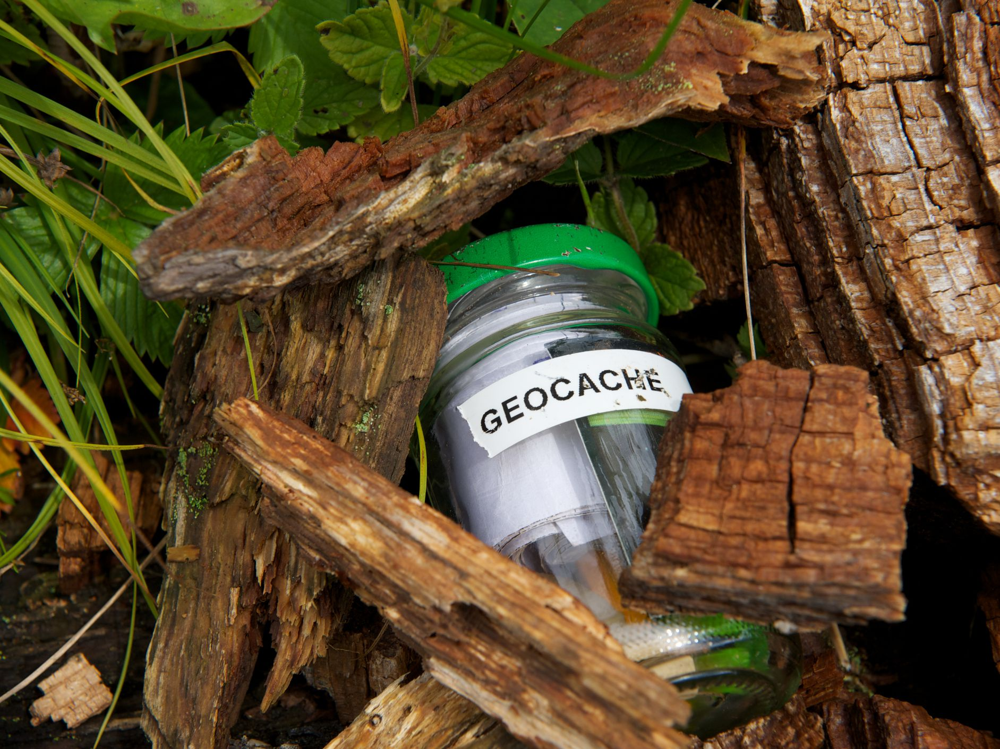

Geocaching is een wereldwijde schattenzoektocht waar digitaal en de real world elkaar tegenkomen. Geocachen is een schatzoektocht op basis van GPS coördinaten. Via deze coördinaten en je GPS (of smartphone) kan je aan de slag gaan met geocachen. Naar wat je op zoek gaat tijdens het geocachen is steeds een raadsel, en dat is juist het leuke van deze mooie buitensport. Meer informatie kan je terugvinden op Geocaching.com
